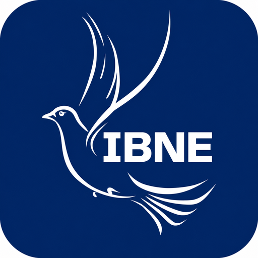

Igreja Batista Nova Esperança
Central de Estudos Bíblicos
Instale a CEB no seu celular, tablet ou computador para abrir como aplicativo.
Abrir CEB CEB V2 · Aplicativo oficial da IBNE
Instale a CEB no seu celular, tablet ou computador para abrir como aplicativo.
Abrir CEB CEB V2 · Aplicativo oficial da IBNE